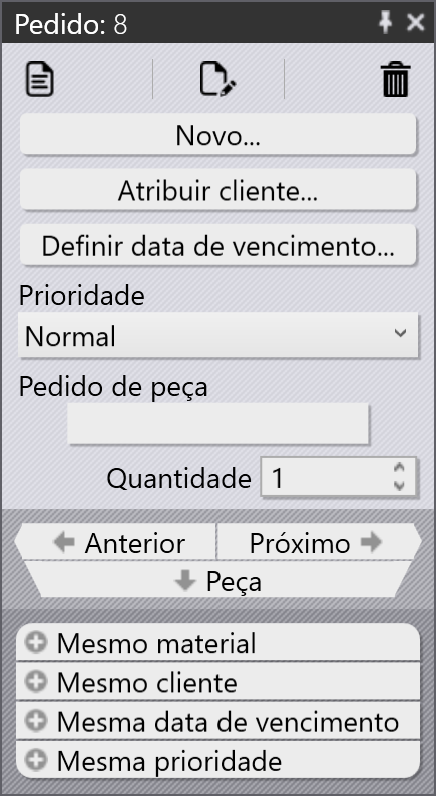
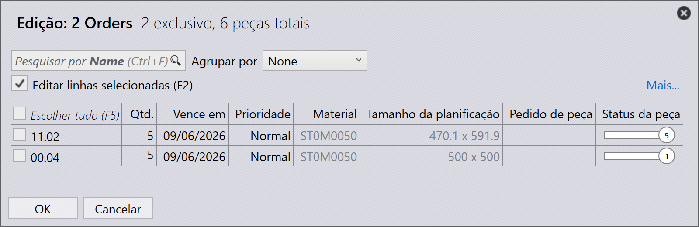
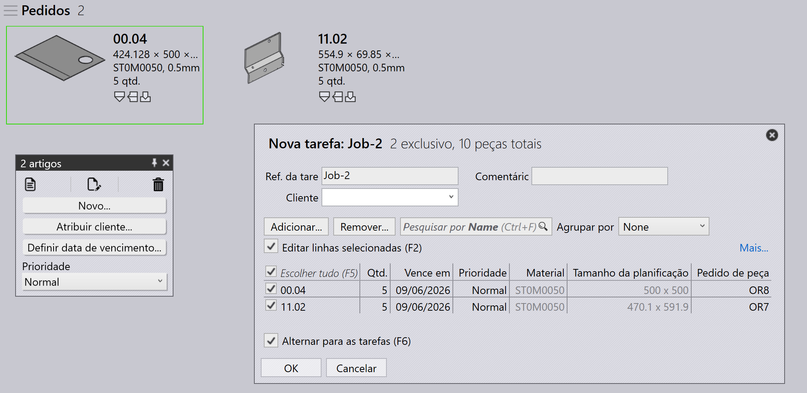

Pedidos
Um pedido define quais peças precisam ser fabricadas, em que quantidade e até quando. Ele orienta o planejamento e a execução da produção no TruSmartCAM. Os pedidos podem ser criados ou importados usando vários métodos, e podem ser convertidos em jobs para o planejamento da produção.
Painel de pedidos
 |
|
Editar pedidos
Selecione um ou mais pedidos e clique com o botão direito para modificar detalhes comuns do pedido, como quantidade, data de vencimento, prioridade e informações do cliente.
Se vários pedidos selecionados exigirem valores diferentes, use a opção Check-out for Editing para editar cada pedido individualmente de acordo com a necessidade.

Quaisquer atualizações feitas nos pedidos são aplicadas imediatamente ao banco de dados. Use o comando Excluir para remover pedidos da biblioteca de pedidos.
| O comando Delete remove apenas os pedidos. As peças vinculadas aos respectivos pedidos não são excluídas da biblioteca de peças. |
Planejar pedidos
Selecione um ou mais pedidos, clique com o botão direito e clique em Novo… → Tarefa para converter os pedidos selecionados em jobs. Use as opções de Sort e Filter para agrupar os pedidos relevantes antes da criação do job.

Depois que os pedidos são convertidos em um job:
-
O job é movido para a página Jobs
-
Os pedidos são removidos da lista Orders
-
O fluxo de trabalho padrão de planejamento de jobs pode então ser usado para o planejamento da produção e o nesting
Para mais informações sobre o fluxo de trabalho de planejamento de jobs, consulte Auto Plan
Informações adicionais
-
Se um job contendo pedidos for excluído, os pedidos associados são automaticamente movidos de volta para a página Orders Ready, a menos que o job ou a peça esteja marcado como Completed.
-
Os pedidos podem ser adicionados ou removidos de um job existente através da janela Tarefa de edição com base nos requisitos de produção.